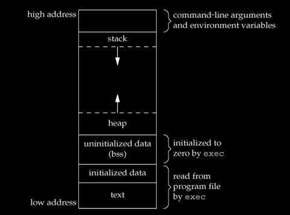

<!DOCTYPE html>
<html lang="en">
  <head>
    <meta charset="utf-8" />
    <meta name="viewport" content="width=device-width, initial-scale=1.0, maximum-scale=1.0, user-scalable=no" />

    <title></title>
    <link rel="stylesheet" href="dist/reveal.css" />
    <link rel="stylesheet" href="dist/theme/black.css" id="theme" />
    <link rel="stylesheet" href="plugin/highlight/zenburn.css" />
	<link rel="stylesheet" href="css/layout.css" />
	<link rel="stylesheet" href="plugin/customcontrols/style.css">


    <script defer src="dist/fontawesome/all.min.js"></script>

	<script type="text/javascript">
		var forgetPop = true;
		function onPopState(event) {
			if(forgetPop){
				forgetPop = false;
			} else {
				parent.postMessage(event.target.location.href, "app://obsidian.md");
			}
        }
		window.onpopstate = onPopState;
		window.onmessage = event => {
			if(event.data == "reload"){
				window.document.location.reload();
			}
			forgetPop = true;
		}

		function fitElements(){
			const itemsToFit = document.getElementsByClassName('fitText');
			for (const item in itemsToFit) {
				if (Object.hasOwnProperty.call(itemsToFit, item)) {
					var element = itemsToFit[item];
					fitElement(element,1, 1000);
					element.classList.remove('fitText');
				}
			}
		}

		function fitElement(element, start, end){

			let size = (end + start) / 2;
			element.style.fontSize = `${size}px`;

			if(Math.abs(start - end) < 1){
				while(element.scrollHeight > element.offsetHeight){
					size--;
					element.style.fontSize = `${size}px`;
				}
				return;
			}

			if(element.scrollHeight > element.offsetHeight){
				fitElement(element, start, size);
			} else {
				fitElement(element, size, end);
			}		
		}


		document.onreadystatechange = () => {
			fitElements();
			if (document.readyState === 'complete') {
				if (window.location.href.indexOf("?export") != -1){
					parent.postMessage(event.target.location.href, "app://obsidian.md");
				}
				if (window.location.href.indexOf("print-pdf") != -1){
					let stateCheck = setInterval(() => {
						clearInterval(stateCheck);
						window.print();
					}, 250);
				}
			}
	};


        </script>
  </head>
  <body>
    <div class="reveal">
      <div class="slides"><section  data-markdown><script type="text/template"><!-- .slide: class="drop" -->
<div class="" style="position: absolute; left: 0px; top: 0px; height: 1200px; width: 1600px; min-height: 1200px; display: flex; flex-direction: column; align-items: center; justify-content: center" absolute="true">

## arrays
</div></script></section><section  data-markdown><script type="text/template"><!-- .slide: class="drop" -->
<div class="" style="position: absolute; left: 0px; top: 0px; height: 1200px; width: 1600px; min-height: 1200px; display: flex; flex-direction: column; align-items: center; justify-content: center" absolute="true">

### quick challenge

**read `5` integers and print their sum**
</div></script></section><section  data-markdown><script type="text/template"><!-- .slide: class="drop" -->
<div class="" style="position: absolute; left: 0px; top: 0px; height: 1200px; width: 1600px; min-height: 1200px; display: flex; flex-direction: column; align-items: center; justify-content: center" absolute="true">

### lets step it up

**read `1000` integers and print their sum**
</div></script></section><section  data-markdown><script type="text/template"><!-- .slide: class="drop" -->
<div class="" style="position: absolute; left: 0px; top: 0px; height: 1200px; width: 1600px; min-height: 1200px; display: flex; flex-direction: column; align-items: center; justify-content: center" absolute="true">

## what are arrays?

```cpp
int arr[5] = {1, 2, 3, 4, 5};

char arr2[64];
```


</div></script></section><section  data-markdown><script type="text/template"><!-- .slide: class="drop" -->
<div class="" style="position: absolute; left: 0px; top: 0px; height: 1200px; width: 1600px; min-height: 1200px; display: flex; flex-direction: column; align-items: center; justify-content: center" absolute="true">

### will it work?
```cpp
int arr[3] = {1, 2, 3, 4};
```
</div></script></section><section  data-markdown><script type="text/template"><!-- .slide: class="drop" -->
<div class="" style="position: absolute; left: 0px; top: 0px; height: 1200px; width: 1600px; min-height: 1200px; display: flex; flex-direction: column; align-items: center; justify-content: center" absolute="true">

### will it work?
```cpp
int arr[5] = {1, 2, 3, 4};
```
</div></script></section><section  data-markdown><script type="text/template"><!-- .slide: class="drop" -->
<div class="" style="position: absolute; left: 0px; top: 0px; height: 1200px; width: 1600px; min-height: 1200px; display: flex; flex-direction: column; align-items: center; justify-content: center" absolute="true">

### will it work?
```cpp
int arr[] = {1, 2, 3, 4};
```
</div></script></section><section  data-markdown><script type="text/template"><!-- .slide: class="drop" -->
<div class="" style="position: absolute; left: 0px; top: 0px; height: 1200px; width: 1600px; min-height: 1200px; display: flex; flex-direction: column; align-items: center; justify-content: center" absolute="true">

### will it work?
```cpp
int arr[];
```

</br>

```cpp
int arr[5] = {};
```
</div></script></section><section  data-markdown><script type="text/template"><!-- .slide: class="drop" -->
<div class="" style="position: absolute; left: 0px; top: 0px; height: 1200px; width: 1600px; min-height: 1200px; display: flex; flex-direction: column; align-items: center; justify-content: center" absolute="true">

### getting side tracked

#### what is the difference here?

```cpp
#include <iostream>

int main() {
	int arr[100000000] = {}; /* 400Mb */
	
	std::cout << arr[0];
}
```

 </br>

```cpp
#include <iostream>

int arr[100000000] = {}; /* 400Mb */

int main() {
	std::cout << arr[0];
}
```
<!-- .element: class="fragment fade-in-then-out" -->
</div></script></section><section  data-markdown><script type="text/template"><!-- .slide: class="drop" -->
<div class="" style="position: absolute; left: 0px; top: 0px; height: 1200px; width: 1600px; min-height: 1200px; display: flex; flex-direction: column; align-items: center; justify-content: center" absolute="true">

#### 


</div></script></section><section  data-markdown><script type="text/template"><!-- .slide: class="drop" -->
<div class="" style="position: absolute; left: 0px; top: 0px; height: 1200px; width: 1600px; min-height: 1200px; display: flex; flex-direction: column; align-items: center; justify-content: center" absolute="true">

### getting back on track
</div></script></section><section  data-markdown><script type="text/template"><!-- .slide: class="drop" -->
<div class="" style="position: absolute; left: 0px; top: 0px; height: 1200px; width: 1600px; min-height: 1200px; display: flex; flex-direction: column; align-items: center; justify-content: center" absolute="true">

### some useful functions
#### *sizeof*

```cpp
#include <iostream>

int main() {
	int arr[] = {1, 2, 3, 4, 5, 6};
	
	int arr_size = sizeof(arr) / sizeof(arr[0]);

	for (int i = 0; i < arr_size; i++) {
		std::cout << arr[i] << " ";
	}

}

```

</br>

#### *swap*


```cpp
#include <iostream>
#include <utility>

int main() {
	int arr1[] = {1, 2, 3};
	int arr2[] = {4, 5, 6};
	
	std::swap(arr1, arr2);

	std::cout << "arr1: ";
	for (int i = 0; i < 3; i++) {
		std::cout << arr1[i] << " ";
	}
	std::cout << "\narr2: ";
	for (int i = 0; i < 3; i++) {
		std::cout << arr2[i] << " ";
	}
}
```
</div></script></section><section  data-markdown><script type="text/template"><!-- .slide: class="drop" -->
<div class="" style="position: absolute; left: 0px; top: 0px; height: 1200px; width: 1600px; min-height: 1200px; display: flex; flex-direction: column; align-items: center; justify-content: center" absolute="true">

#### *sort*

```cpp
#include <iostream>
#include <algorithm>

int main() {
	int arr[] = {6, 2, 3, 4, 8, 1};
	std::sort(arr, arr + 6); /* std::sort(arr, arr + 6, greater<int>()); for DEC sorting */

	for (int i = 0; i < 6; i++) {
		std::cout << arr[i] << " ";
	}
	
}
```

</br>


#### *reverse*

```cpp
#include <iostream>
#include <algorithm>

int main() {
	int arr[] = {6, 2, 3, 4, 8, 1};
	std::reverse(arr, arr + 6); 
	
	for (int i = 0; i < 6; i++) {
		std::cout << arr[i] << " ";
	}
}
```
</div></script></section><section  data-markdown><script type="text/template"><!-- .slide: class="drop" -->
<div class="" style="position: absolute; left: 0px; top: 0px; height: 1200px; width: 1600px; min-height: 1200px; display: flex; flex-direction: column; align-items: center; justify-content: center" absolute="true">

#### min and max

```cpp
#include <iostream>
#include <algorithm>

int main() {
	int arr[] = {1, 2, 3, 4};
	
	std::cout << *std::max_element(arr, arr + 4);
}
```

</br>

```cpp
#include <iostream>
#include <algorithm>

int main() {
	int arr[] = {1, 2, 3, 4};
	
	std::cout << *std::min_element(arr, arr + 4);
}
```
</div></script></section><section  data-markdown><script type="text/template"><!-- .slide: class="drop" -->
<div class="" style="position: absolute; left: 0px; top: 0px; height: 1200px; width: 1600px; min-height: 1200px; display: flex; flex-direction: column; align-items: center; justify-content: center" absolute="true">

## Strings
</div></script></section><section  data-markdown><script type="text/template"><!-- .slide: class="drop" -->
<div class="" style="position: absolute; left: 0px; top: 0px; height: 1200px; width: 1600px; min-height: 1200px; display: flex; flex-direction: column; align-items: center; justify-content: center" absolute="true">

```cpp
#include <iostream>

int main() {
	char str1[] = "Hello";

	std::cout << str1;
}
```

</br>

```cpp
#include <iostream>
#include <string>

int main() {
	std::string str = "Hello";
	
	std::cout << str;
}
```
</div></script></section></div>
    </div>

    <script src="dist/reveal.js"></script>

    <script src="plugin/markdown/markdown.js"></script>
    <script src="plugin/highlight/highlight.js"></script>
    <script src="plugin/zoom/zoom.js"></script>
    <script src="plugin/notes/notes.js"></script>
    <script src="plugin/math/math.js"></script>
	<script src="plugin/mermaid/mermaid.js"></script>
	<script src="plugin/chart/chart.min.js"></script>
	<script src="plugin/chart/plugin.js"></script>
	<script src="plugin/menu/menu.js"></script>
	<script src="plugin/customcontrols/plugin.js"></script>

    <script>
      function extend() {
        var target = {};
        for (var i = 0; i < arguments.length; i++) {
          var source = arguments[i];
          for (var key in source) {
            if (source.hasOwnProperty(key)) {
              target[key] = source[key];
            }
          }
        }
        return target;
      }

	  function isLight(color) {
		let hex = color.replace('#', '');

		// convert #fff => #ffffff
		if(hex.length == 3){
			hex = `${hex[0]}${hex[0]}${hex[1]}${hex[1]}${hex[2]}${hex[2]}`;
		}

		const c_r = parseInt(hex.substr(0, 2), 16);
		const c_g = parseInt(hex.substr(2, 2), 16);
		const c_b = parseInt(hex.substr(4, 2), 16);
		const brightness = ((c_r * 299) + (c_g * 587) + (c_b * 114)) / 1000;
		return brightness > 155;
	}

	var bgColor = getComputedStyle(document.documentElement).getPropertyValue('--r-background-color').trim();
	var isLight = isLight(bgColor);

	if(isLight){
		document.body.classList.add('has-light-background');
	} else {
		document.body.classList.add('has-dark-background');
	}

      // default options to init reveal.js
      var defaultOptions = {
        controls: true,
        progress: true,
        history: true,
        center: true,
        transition: 'default', // none/fade/slide/convex/concave/zoom
        plugins: [
          RevealMarkdown,
          RevealHighlight,
          RevealZoom,
          RevealNotes,
          RevealMath.MathJax3,
		  RevealMermaid,
		  RevealChart,
		  RevealCustomControls,
		  RevealMenu,
        ],


    	allottedTime: 120 * 1000,

		mathjax3: {
			mathjax: 'plugin/math/mathjax/tex-mml-chtml.js',
		},
		markdown: {
		  gfm: true,
		  mangle: true,
		  pedantic: false,
		  smartLists: false,
		  smartypants: false,
		},

		mermaid: {
			theme: isLight ? 'default' : 'dark',
		},

		customcontrols: {
			controls: [
				{id: 'toggle-overview',
				title: 'Toggle overview (O)',
				icon: '<i class="fa fa-th"></i>',
				action: 'Reveal.toggleOverview();'
				},
			]
		},
		menu: {
			loadIcons: false
		}
      };

      // options from URL query string
      var queryOptions = Reveal().getQueryHash() || {};

      var options = extend(defaultOptions, {"width":1600,"height":1200,"margin":0,"maxScale":2,"controls":true,"progress":true,"slideNumber":true,"transition":"slide","transitionSpeed":"normal"}, queryOptions);
    </script>

    <script>
      Reveal.initialize(options);
    </script>
  </body>

  <!-- created with Advanced Slides -->
</html>
